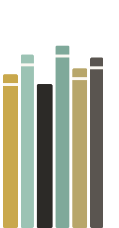

Stille · Klänge · Bewusstheit
Ihre App für Stille, Klänge und Bewusstheit im Alltag. Ein Moment Stille, ein Klang, eine kleine Übung.
🇩🇪 🇬🇧 Die App gibt es auf Deutsch und auf Englisch · English version →
Probeversion gratis Direkt im Browser ausprobieren, ohne Konto →
Drei Minuten ankommen, einem Klang zuhören, einen Weg in kleinen Etappen gehen. 68 Klänge, Übungen, Auszüge aus den Büchern von Detlef Rathmer und Musik zum Innehalten. Wer sein Enneagramm kennt, wählt seinen Typ und bekommt dazu passende Übungen. Alle anderen nutzen die App genauso.
Kostenlose Probe-Version. Vollversion: einmalig 19,99 € (Kauf in der App), kein Abo, ohne Konto.
Musik und Text: Detlef Rathmer, „A Glimpse Beyond Time“
✦ Wird ständig erweitert. Es kommen laufend neue Inhalte hinzu: neue Lehren, Klänge, Songs und Wege. Das ist der Vorteil gegenüber einem Buch.
Wasser, Wald, Feuer, Klangschale, Tiere und mehr. Mit Timer, Gong am Anfang und Ende und langsamem Ausklingen.
Kurze Übungen für Atem, Erdung und Innehalten. Auf Wunsch gleich mit passendem Klang.
Von „Wer lenkt hier wen?“ bis „Was ist Liebe?“: Themenpfade, die Sie Schritt für Schritt gehen.
Kurze Auszüge aus Büchern von Detlef Rathmer, dazu eine Hörprobe aus dem Hörbuch „Meta-Intelligenz“.
Die App funktioniert ganz ohne Enneagramm-Kenntnisse. Wer seinen Typ kennt, wählt ihn und findet dazu passende Übungen, Fragen, Klänge und Musik.
Spirituelle Songs, Heilungsmusik für die neun Typen und meditativer Jazz.
Öffnen Sie die App im Browser. Mit „Zum Home-Bildschirm“ liegt sie danach wie eine App auf Ihrem Handy.
Zur App →Hinweis: Die Inhalte dienen der Information, Selbsterkenntnis und persönlichen Reflexion. Sie ersetzen keine medizinische, psychotherapeutische oder ärztliche Diagnostik und Behandlung. English version: Stillness & Space.